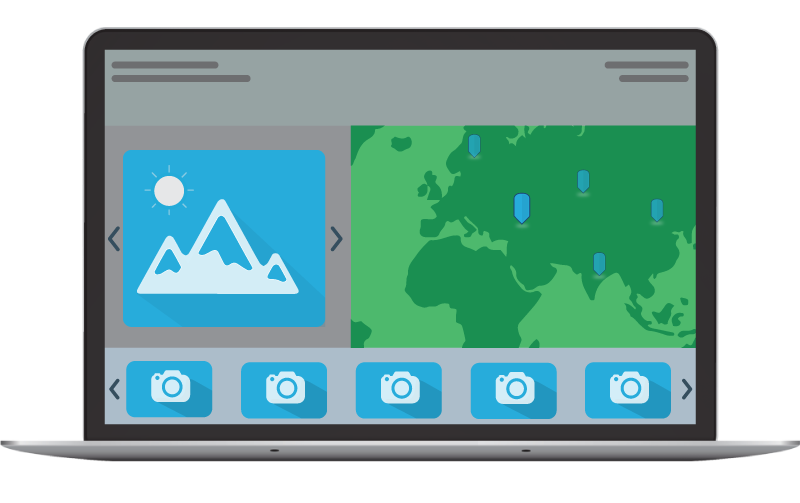

Site Assessment for Renewable Energy
Renewable energy is derived from natural processes that are replenished
at a rate that is equal or faster than the rate at which they are
consumed. There are various forms of renewable energy, deriving directly
or indirectly from the sun, or from heat generated deep within the earth.
They include energy generated from solar, wind, biomass, geothermal,
hydropower and ocean resources, solid biomass, biogas and liquid biofuels.
(More)
Theme of the project?
Assessment of Renewable energy sources in New Brunswick and Tidal stations impact on Marine life
How GIS can help us understand (more!) about these sources
Thought on this website design:
This project website is a single HTML page with each tab representing different divs. Thanks to Jquery which does this amazing job and also many functionalities in the background. Artistic look of most the HTML components is achived through Bootstrap. Cheers to Leaflet for all the Map components and GeoJSON layer functionalities. Plotly helped a lot in creating dynamic Interactive charts at the runtime.
(*underlined text are links)
Theme of the project?
Assessment of Renewable energy sources in New Brunswick and Tidal stations impact on Marine life
How GIS can help us understand (more!) about these sources
Thought on this website design:
This project website is a single HTML page with each tab representing different divs. Thanks to Jquery which does this amazing job and also many functionalities in the background. Artistic look of most the HTML components is achived through Bootstrap. Cheers to Leaflet for all the Map components and GeoJSON layer functionalities. Plotly helped a lot in creating dynamic Interactive charts at the runtime.
(*underlined text are links)
Maxwell Kamba
Solar Energy
Morteza Esfandiari
Geothermal Energy
Ronak Vadalani
Tidal Energy
Vaasudevan Srinivasan
Python & Web Development
| # | Category | Links | Description | Format |
|---|---|---|---|---|
| 1 | Solar | Photovoltaic potential and insolation dataset | Estimates of the electricity that can be generated by photovoltaic arrays (NRCan) | .CSV |
| 2 | Geothermal |
*
Geothermal Map of Canada * Drill hole Dataset |
|
.JPG SHP |
| 3 | Tidal |
*
Tidal Height in St. John Harbour * Tidal Height in Observatories * CoastalMap |
|
.CSV .SHP |
| 4 | Counties |
*
DIVA GIS datasets * New Brunswick Road Network |
|
.SHP .SHP |
| 5 | Population |
*
Population Statistics (1996-2016) |
Updated the statistical values in the Attribute table of county Shp | .SHP |


Solar (Photovoltaic-PV) Energy
Solar energy is a form of renewable energy which comes from the sun. In Canada,
Photovoltaic (PV) technology has become a favoured form of renewable energy
technology due to a number of social and economic factors, including the
need to reduce greenhouse gas (GHG) emissions, deregulation and the restructuring of
electric power generating companies. The rapid growth in the deployment of PV
in recent years indicates that the technology is quickly gaining ground in Canada.
They can be placed on a home, cottage, camper trailer and in many other places.
This technology is a good option for those who own camps or cottages in remote areas
where you are not connected to the power grid. This can also aid in reducing the
amount of energy that you must purchase if you are connected to the electricity grid.
Municipality database of photovoltaic (PV) potential and insolation provides
estimates of the electricity that can be generated by photovoltaic arrays (in kWh/kW)
for over 3500 municipalities in Canada.

ArcMap Screenshots
Model
<- click on the polygons to view the PV potential
ArcMap Screenshots
Model
<- click on the polygons to view the PV potential
Geothermal Energy
For the Geothermal part, our project considers factors like, Accessibility,
Market, Drill holes and the Geothermal potential. The Geothermal potential has been
considered at the depth of 7km since at present, geothermal wells are rarely more
than 3 km deep. Upper estimates of geothermal resources assume wells as
deep as 10 km. As for market factor, we have considered the population of
different cities across New Brunswick. The cities with the population of
higher than 30,000 have been selected as suitable places for constructing
a geothermal power generation stations. The accessibility layer represents some
of the main roads across New Brunswick. The purpose of considering this layer
was due to being able to transport the power from the power generation stations
to cities. The last layer, which are the drill holes, have been mentioned
in order to make a rough suggestion for constructing a geothermal station,
since the drilling has been done to some extent at this locations.
ArcMap Screenshots
Model
<- click on the polygons to view thematic information
ArcMap Screenshots
Model
<- click on the polygons to view thematic information
Tidal Energy
Tidal energy is generated from power found in ocean tidal currents and the use of tidal height differences. Tidal range may vary over a wide range (4.5-12.4 m) from site to site. A tidal range of at least 7m is required for economical operation and for sufficient head of water for the turbines. Tidal energy can be exploited either by building semi-permeable barrages across estuaries with a high tidal range or by harnessing offshore tidal streams. This project also considers Fundy Aquarium Ecozone as a parameter and outputs sites which will not cause any damages to it.
ArcMap Screenshots
Model

Solar
Tidal

Geothermal
Solar:- The analysis shows NB has the potential in generating electricity for solar energy on an average of 1091.93 kWh/kWp
Geothermal:- After considering the mentioned factors for constructing a geothermal power station and overlaying the geothermal potential map, we can conclude that Fredericton and Saint John cities have the highest potential to construct a geothermal power station. Since both cities are located where the ground temperature is fairly high and covers all the required factors including Market, Accessibility and as we can see there are some drilled holes in the radius of 30 km within these cities which could be a choice for geothermal power stations.
Tidal:- Considering the marine life zone, the tidal height and other factors, we have attempted to find the site locations suitable for building the tidal power station and generating the tidal energy on the coastal region of New Brunswick.
ArcGIS online: http://arcg.is/WzLje
| Solar | Geothermal | Tidal |
|---|---|---|
|  | ||